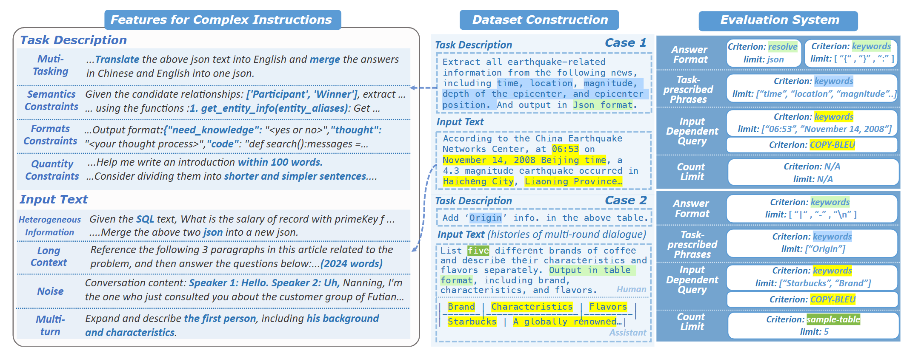

|
Xunzhe Zhou I am an undergraduate student at Fudan University, pursuing my Bachelor's degree in Computer Science and Technology. Recently, I have been an intern at NUS working with Prof. Lin Shao studying robotic task and motion planning. Previously, I collaborated with Prof. Xiangyang Xue and Prof. Yanwei Fu on constructing a mobile manipulation system with 3D reconstruction and vision-language models. I also worked with Prof. Yanghua Xiao on studying LLMs' real-world complex instruction following capabilities, and with Prof. Siyang Leng on nonlinear dynamical systems control. I also had a wonderful semester at the UC Berkeley during fall 2023, where I studied reinforcement learning, deep learning, optimization models, and artificial intelligence, with GPA 4.00 / 4.00. |

|
News
[Dec. 2023] Our paper CELLO is accepted by AAAI 2024!
Research
My ultimate goal is to enable robots to assist human with daily task automatically.
My current research interests focus on leveraging existing foundational models to assist robots with perception and decision-making in the physical world. Specifically,
1) I aim to develop a general perception system to understand complex and dynamical environments;
2) I seek to create a general decision-making systems for real-world long-term task planning.
In the future, I plan to continue my research work with a unified lifelong learning system by
1) developing a data collection system in different scenarios with various tasks,
2) constructing a universal learning system for heterogeneous robots to learn unified skills, and
3) building a collaborative system to enable real robots complete daily task more efficiently.
Publications
* denotes equal contribution.

|
EMOS: Embodiment-aware Heterogeneous Multi-robot Operating System with LLM Agents Xunzhe Zhou*, J. Chen*, C. Yu*, T. Xu, Y. Mu, M. Hu, W. Shao, Y. Wang, G. Li, L. Shao In submission, 2024 In the the real-world robot environment, the capability of the agent in MAS is tied to the physical composition of the robot. We introduced a multi-agent framework EMOS to improve the collaboration among heterogeneous robots with varying embodiment capabilities. To evaluate how well our MAS performs, we designed Habitat-MAS benchmark, including four tasks: 1) navigation, 2) perception, 3) manipulation, and 4) comprehensive multi-floor object rearrangement. |
|  |
Can Large Language Models Understand Real-World Complex Instructions? Q. He, J. Zeng, W. Huang, L. Chen, J. Xiao, Q. He, Xunzhe Zhou, J. Liang, Y. Xiao AAAI, 2024 project page / abstract / paper / code / bibtex / video Current LLMs often ignore semantic constraints, generate incorrect formats, violate length or count constraints, and be unfaithful to input text. We propose CELLO, a benchmark for evaluating LLMs' ability to follow complex instructions. We design a real-world dataset carefully crafted by human experts with 566 samples and 9 tasks. We also established 4 criteria and corresponding metrics and compared 18 Chinese-oriented models and 15 English-oriented models. |

|
Reservoir Computing as Digital Twins for Controlling Nonlinear Dynamical Systems Xunzhe Zhou*, R. Cao*, J. Hou, C. Guan, S. Leng In submission, 2023 It is difficult to control a chaotic system without knowing its differential equation and traditional control strategies require continuous adjustment with various parameters. To address this issue, we leveraged Echo State Network as the digital twin to predict and control the behavior of chaotic systems. We evaluated our model performance on 3 chaotic systems and 3 control strategies collectively. And we conducted extensive experiments to validate the prediction accuracy, control efficiency, and noise robustness of our model. |
Selected Projects

|
Mobile Manipulation Based on Semantic 3D Reconstruction and VLMs J. Hou, Xunzhe Zhou, T. Pan, J. Zhang, S. Li, J. Lin, K. Wang, J. Huang, Y. Fu, X. Xue Construct a mobile manipulation and task planning system project page/ code(soon) Aiming to build a service robot with generalizability in daily life scenarios, we constructed a mobile manipulation system with a robot assembled with Franka Panda arm and Hermes mobile base. In this project, I was responsible for implementing 1) semantic grasping pose estimation, 2) semantic mobile base navigation, and 3) hierarchical task planning with 3D reconstruction and VLMs. The follow-up work: TaMMa (Hou et al.) was accepted by CoRL 2024. |

|
Resolving Knowledge Conflicts in Vision-Language Models Xunzhe Zhou, X. Li, Y. Zheng, X. Xue Construct a small VQA dataset for evaluation, resolve with contrastive decoding project page / code VLMs tend to perform hallucination when the image input conflicts with the LLM decoder knowledge base (common sense). To resolve this issue, we constructed a small-scale VQA dataset with images involving knowledge conflicts from the Internet or generated with DALL·E 3 for validation, and evaluated 8 state-of-the-art VLMs on the dataset. We also resolved the knowledge conflicts in LLaVA-1.5 with contrastive decoding. |

|
Neural Style Transfer Based on Fine Tuning Vision Transformer Xunzhe Zhou, Y. Liu, Y. Zhao, Y. Chen UC Berkeley CS182/282A course project, Fall 2023 project page / essay / code To improve Neural Style Transfer, we replaced the content and style encoders of StyTr2 with pre-trained ViT. Restricted by practical computation limitations, we leveraged a two-stage training strategy: we first froze the pre-trained ViT, just trained the decoders. Then we wrapped LoRA to fine-tune ViT with COCO datasets for joint training. |